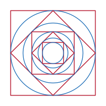

別冊練習問題 5 の解答 図形の面積の総和
(1) 1辺の長さが \(4\) の正方形に内接する円をかき、その円に内接する正方形をかき、さらにその正方形に内接する円をかく……という操作を限りなくくり返す。円の面積の総和と、正方形の面積の総和を求めよ。
面積の比を求める
1辺 \(4\) の正方形の内接円（半径 \(2\)）の内接正方形は、1辺が円の半径の \(\sqrt2\) 倍。
\[\text{次の正方形の1辺}=\dfrac{a}{\sqrt2}\ \Rightarrow\ \text{面積比 }\dfrac12\]円の面積の総和
第1の円：初項 \(\pi\left(\dfrac{4}{2}\right)^2=4 \pi\)、公比 \(\dfrac12\)。
\[\dfrac{4 \pi}{1-\frac12}=8 \pi\]正方形の面積の総和
初項 \(4^2=16\)、公比 \(\dfrac12\)。
\[\dfrac{16}{1-\frac12}=32\]
【答案】
\[\text{円 }8 \pi,\ \text{正方形 }32\]答
(2) 1辺の長さが \(6\) の正方形に内接する円をかき、その円に内接する正方形をかき、さらにその正方形に内接する円をかく……という操作を限りなくくり返す。円の面積の総和と、正方形の面積の総和を求めよ。
面積の比を求める
1辺 \(6\) の正方形の内接円（半径 \(3\)）の内接正方形は、1辺が円の半径の \(\sqrt2\) 倍。
\[\text{次の正方形の1辺}=\dfrac{a}{\sqrt2}\ \Rightarrow\ \text{面積比 }\dfrac12\]円の面積の総和
第1の円：初項 \(\pi\left(\dfrac{6}{2}\right)^2=9 \pi\)、公比 \(\dfrac12\)。
\[\dfrac{9 \pi}{1-\frac12}=18 \pi\]正方形の面積の総和
初項 \(6^2=36\)、公比 \(\dfrac12\)。
\[\dfrac{36}{1-\frac12}=72\]【答案】
\[\text{円 }18 \pi,\ \text{正方形 }72\]答
(3) 1辺の長さが \(3\) の正方形に内接する円をかき、その円に内接する正方形をかき、さらにその正方形に内接する円をかく……という操作を限りなくくり返す。円の面積の総和と、正方形の面積の総和を求めよ。
面積の比を求める
1辺 \(3\) の正方形の内接円（半径 \(\dfrac{3}{2}\)）の内接正方形は、1辺が円の半径の \(\sqrt2\) 倍。
\[\text{次の正方形の1辺}=\dfrac{a}{\sqrt2}\ \Rightarrow\ \text{面積比 }\dfrac12\]円の面積の総和
第1の円：初項 \(\pi\left(\dfrac{3}{2}\right)^2=\dfrac{9 \pi}{4}\)、公比 \(\dfrac12\)。
\[\dfrac{\dfrac{9 \pi}{4}}{1-\frac12}=\dfrac{9 \pi}{2}\]正方形の面積の総和
初項 \(3^2=9\)、公比 \(\dfrac12\)。
\[\dfrac{9}{1-\frac12}=18\]【答案】
\[\text{円 }\dfrac{9 \pi}{2},\ \text{正方形 }18\]答